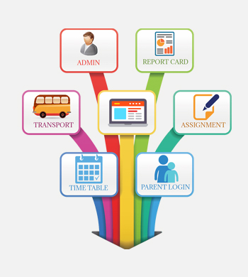
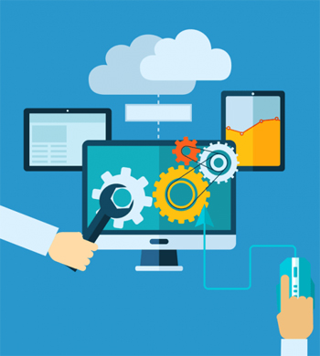

Automate Business with ERP Development Solutions
Oflate, business organizations operate in diverse environment as well as in location. Some businesses operate in single-product whereas single-product oriented businesses operate through multiple site offices. Thus, integrating every aspect of your business under one platform is the need of the hour so that all locations and departments can work in unison. In other words, it’s all about running business in automated manner. Enterprise Resource Planning, commonly known as ERP, gives power to businesses to perform their business operations efficiently and cost-effectively. V3M Technologies, a premier ERP development company in Gurugram and Delhi-NCR, India gives an upper edge to its clients by offering ERP solutions suiting to their needs and budget.

Top-Notch & Reliable Software Development Solutions
V3M Technologies, a premier India based software Development Company, provides full-cycle software development along with engineering services to its clients ranging from start-up to Fortune 500 companies. Operational from Gurugram and Delhi-NCR, the company has been adding value to clients’ services by developing software which reduces operational cost with time and enables clients to focus them on core business activities. By following some of most sought-after development processes and technologies and using the talent of best resources, we are competitive enough to deliver bespoke software development solutions to different industries and domains. Being a premier software development company of India, we offer comprehensive software development solutions to our both national and international clients. Our software development services comprise of: